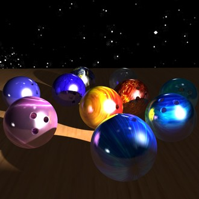
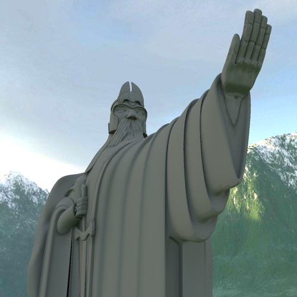
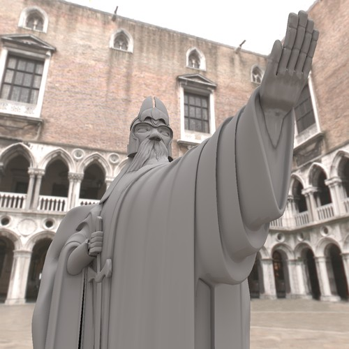
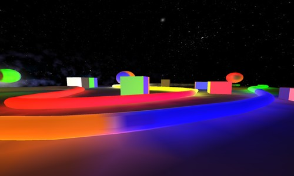
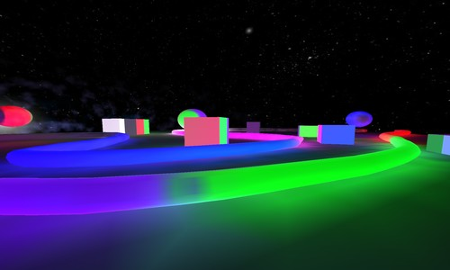

Lightsprint supports multiple types of light sources.
All light sources support
- HDR, floating point intensities (inputs, outputs)
- direct, indirect or global illumination with infinite light bounces (outputs)
- directional information (output)
RRLights
- Point/spot/directional light source.
- Data structure: RRLight
- Data structure container: RRLights
- Setup: RRSolver::setLights()
- Supported in offline GI: yes
- Supported in realtime GI: yes
- Point, spot and directional lights are implemented in RRLight. You can create new type, see RRLight interface. However, light must be emited by single point; to simulate area light, use e.g. triangles with emissive material.

realtime GI from spot light |
|
|
Environment / Sky
- Area light source, emissive skybox or sphere surrounding whole scene.
- Data structure: RRBuffer
- Data structure container: none, only one environment in scene
- Setup: RRSolver::setEnvironment()
- Supported in offline GI: yes
- Supported in realtime GI: yes (only in Fireball)

realtime GI from environment |

simply change texture |
Emissive materials
- Area light source, triangles covered by materials that emit light.
- Data structure: RRObject with emissive materials
- Data structure container: RRObjects
- Setup: RRSolver::setStaticObjects(), RRSolver::setEmittance()
- Supported in offline GI: yes
- Supported in realtime GI: yes

realtime GI from emissive surfaces |

simply change texture |
Custom lights
 1.9.7
1.9.7